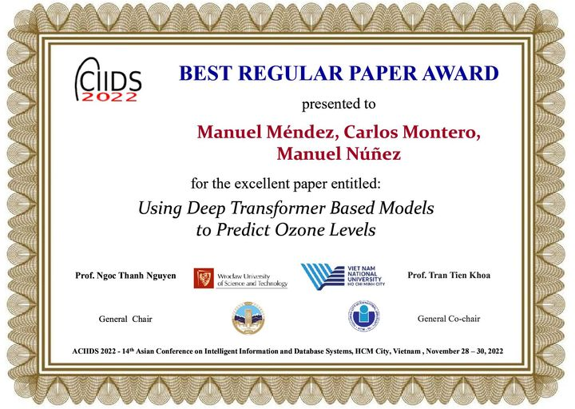

I use formal methods in different application areas. Currently, I’m mainly working on formal methods for testing complex systems. In particular, I consider systems with distributed interfaces, with asynchronous communications and with probablistic/time information. I’m also working on the use of formal methods in user modelling, with an emphasis on collective intelligence. In particular, I’m interested in the inclusion/addition/adaption of formal methods and economic concepts and systems. I recently started to work on Machine/Deep Learning models, in particular, in V & V activities for these models.
I am the founder of the Design and Testing of Reliable Systems research group at the Universidad Complutense de Madrid. The group is currently lead by my colleagues Luis Llana and Mercedes G. Merayo.
I am the coordinator of the DESAFíO-CM program funded by the Regional Goverment of Madrid. Previously, I was the coordinator of the SICOMORo-CM and FORTE-CM programs,
I was the scientific coordinator of the Marie Curie RTN TAROT (Training And Research On Testing). The network coordinator was Ana Cavalli. As one of the network activities, I organized the 2nd Tarot Summer School in Toledo, Spain, June 2006, the 5th Tarot Summer School in Las Navas del Marqués, Spain, July 2009 and the 17th TAROT Summer School of the Summer School in Ávila, Spain, July 2022.
In this interview (in Spanish, by Mario Piatinni) I comment on my past and current (2011) research lines.
The DBLP list containing most of my publications can be found here. Author copies of my papers can be found here.
